with Mona “MJ” Jackson-Ham · Scroll down to see every slide. Slide 1 is the welcome video: press play.
Slide 1 of 25
Slide 2 of 25
Slide 3 of 25
Slide 4 of 25
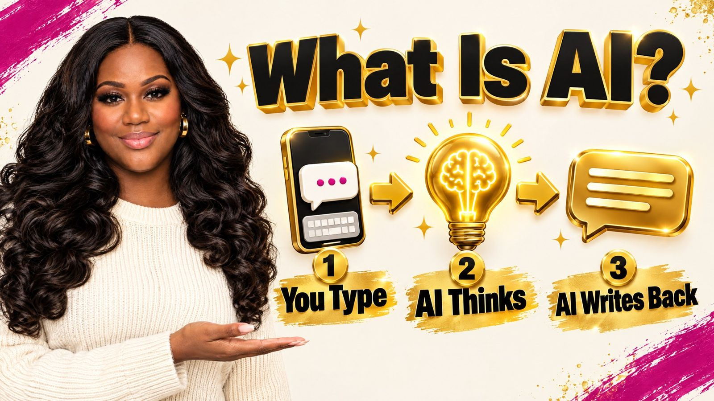
Slide 5 of 25
Slide 6 of 25
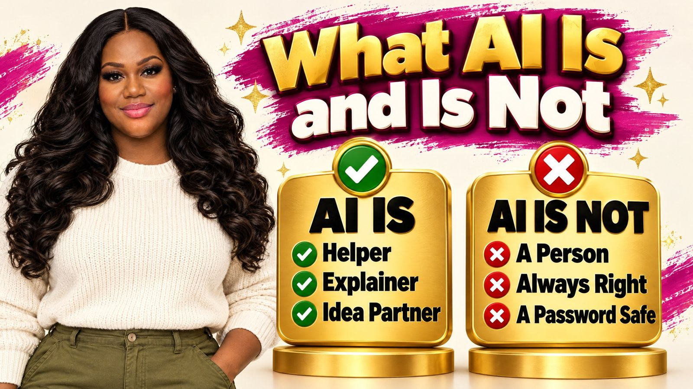
Slide 7 of 25
Slide 8 of 25
Slide 9 of 25
Slide 10 of 25
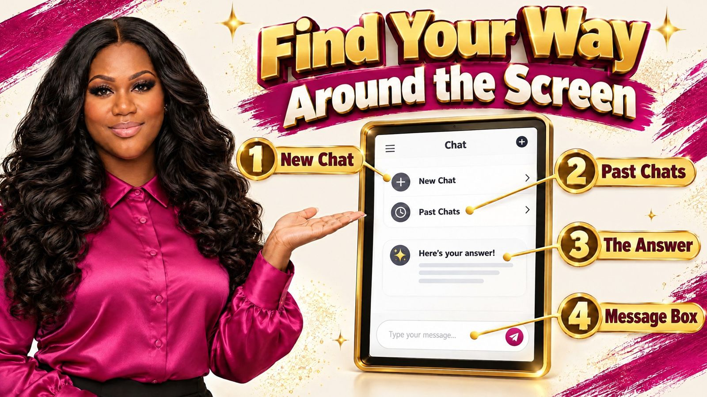
Slide 11 of 25
Slide 12 of 25
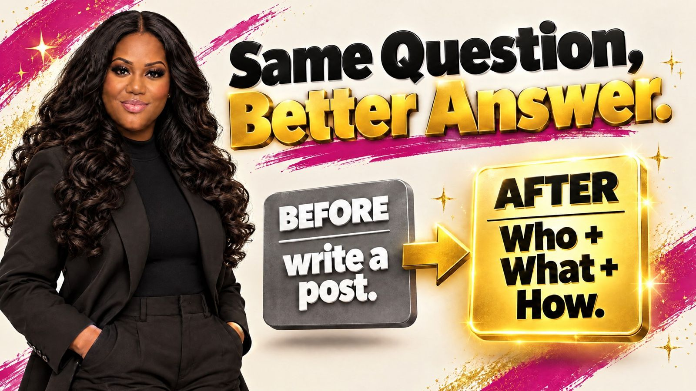
Slide 13 of 25
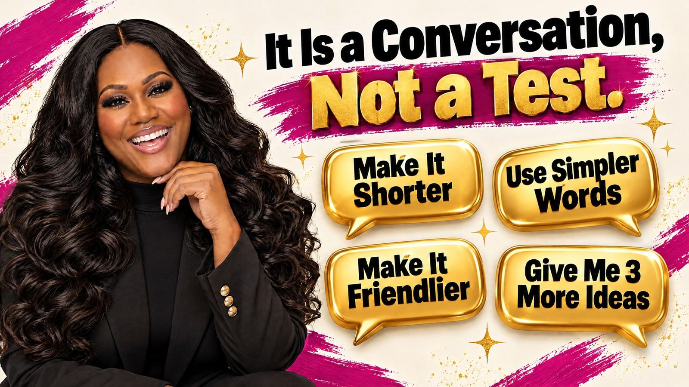
Slide 14 of 25
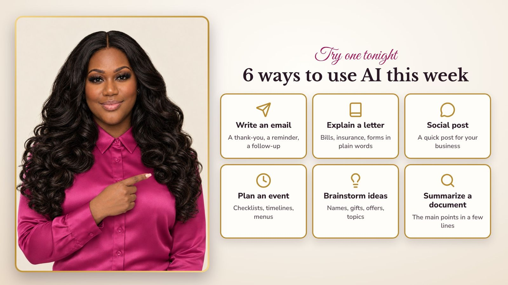
Slide 15 of 25
Slide 16 of 25
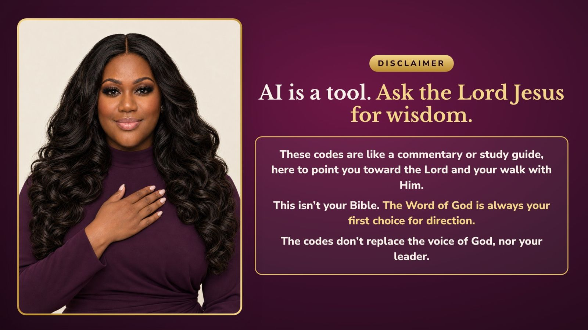
Slide 17 of 25
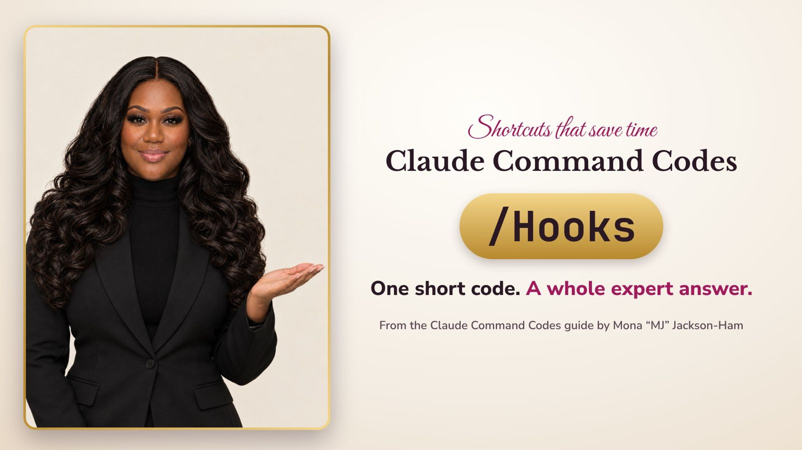
Slide 18 of 25
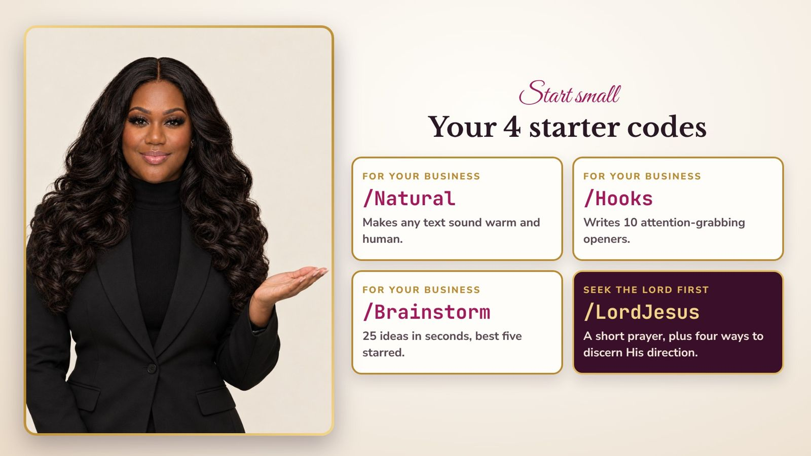
Slide 19 of 25
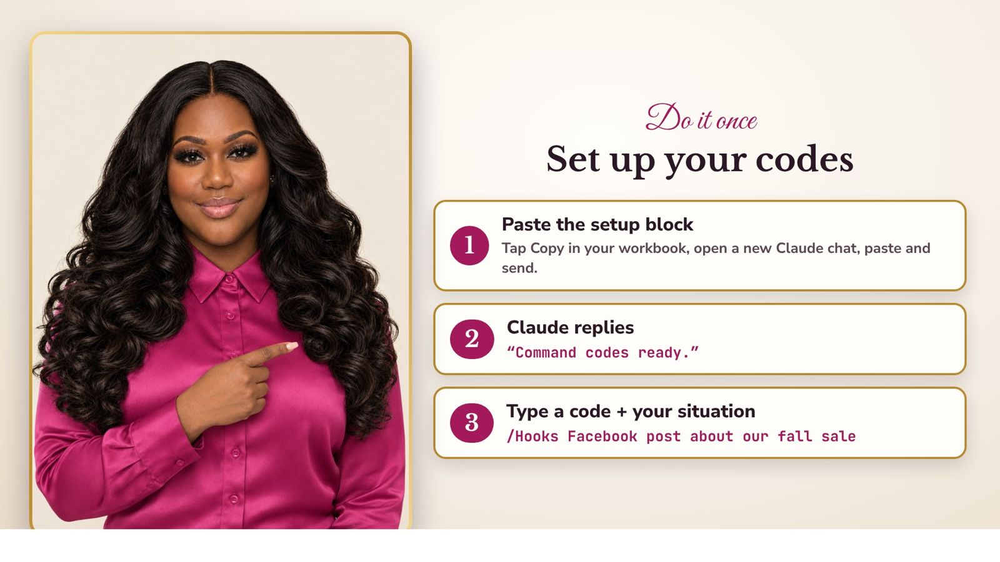
Slide 20 of 25
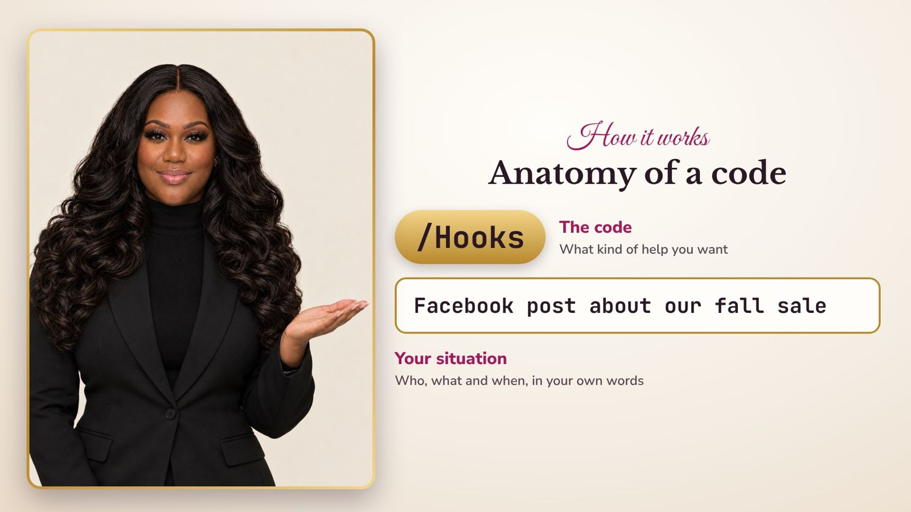
Slide 21 of 25
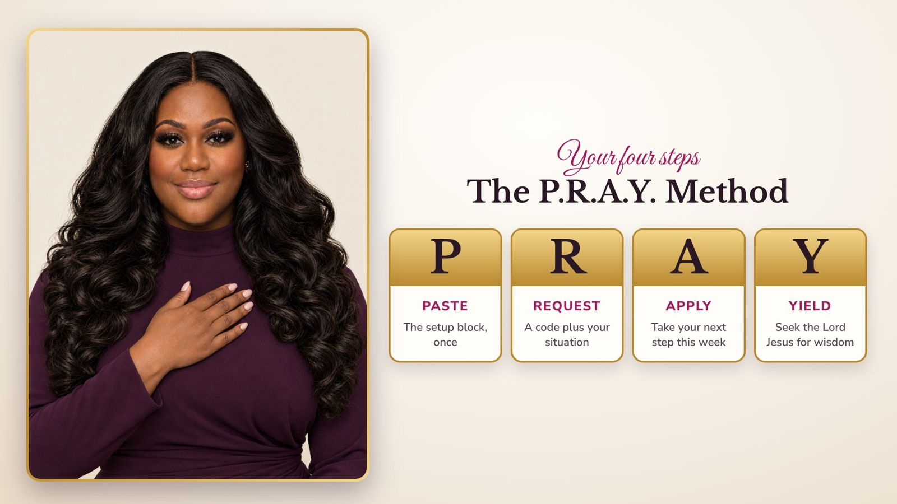
Slide 22 of 25
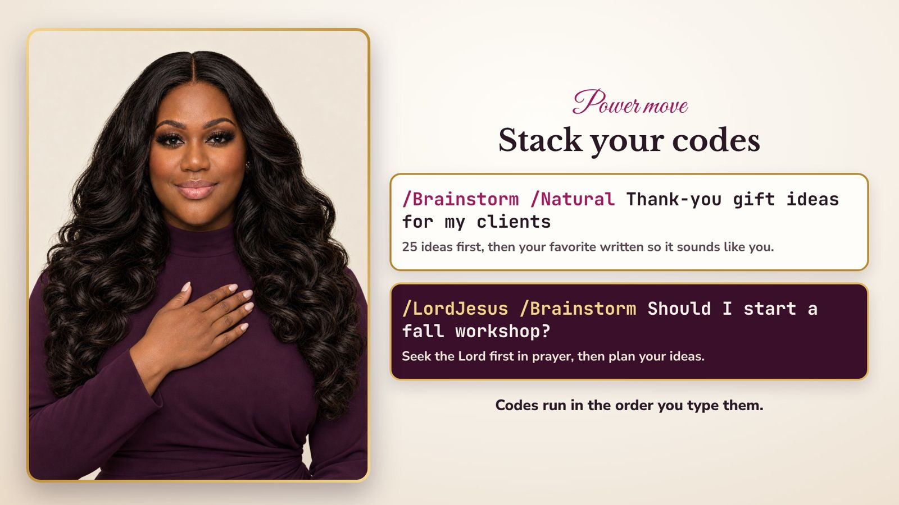
Slide 23 of 25
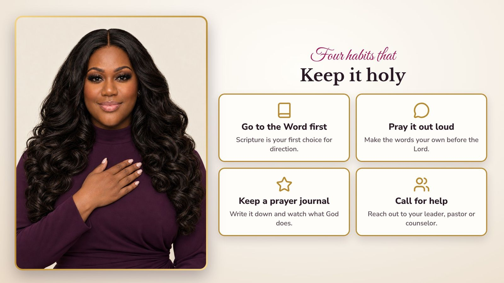
Slide 24 of 25
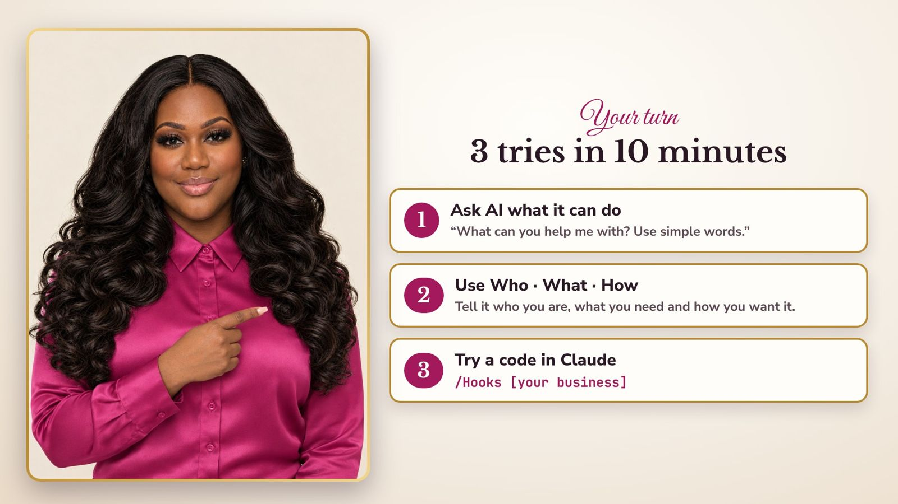
Slide 25 of 25